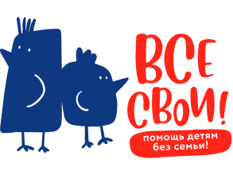
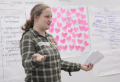

- Заботясь о себе, помогаешь детям без семьи ЗАПИСАТЬСЯ НА ТРЕНИНГ
- 
Наши ценности
-
Что может быть важнее эмоционального состояния? Ниодно достижение, ни одно приобретение само по себе не имеет ценности — если не несет за собой эмоции. Наладить контакт со своими эмоциями, истинными ценностями и желаниями — помочь себе жить по-настоящему своей жизнью.
Рядом с нами есть дети, которые пока не могут ни жить ту жизнь, которую хотят, ни безопасно выражать свои эмоции — дети, рядом с которыми нет близких взрослых.
Ваши взносы затренинги идут наподдержание работы программ Центра
А значит, у детей в детских домах будут значимые взрослые, у выпускников — возможность получить своевременную психологическую и социальную помощь, а у нас с вами жить в обществе, где больше эмоционально устойчивых и чутких людей.

Тренинг «Идеальное будущее из неидеального прошлого»
- 
-
Тренинг "Идеальное будущее из неидеального прошлого" - это:
- возможность увидеть, как прошлое влияет на наш выбор в настоящем;
- исследовать, какой образ идеального и возможного будущего сформирован сейчас и какие потребности за этим стоят;
- понимание, как принимать решения, исходя из своих ценностей.
-
А ещё тренинг - это:
- уютная и безопасная атмосфера;
- принимающая группа;
- профессиональная команда психологов;
- техники, позволяющие качественно исследовать себя;
- раздаточный материал, чтобы вы могли продолжить этот путь самостоятельно.
Подробнее - ЗАПИСАТЬСЯ НА ТРЕНИНГ
Наши специалисты
-
Василина Степановакризисный психолог, директор по развитию Центра «Все свои!»Кризисный психолог («Практическая психология в социальной сфере. Технологии и навыки антикризисной помощи», Санкт-Петербург, ЧУ ДПО Инстиут практической психологии «Иматон», 2019).
Работаю в гуманистическом и когнитивно-поведенческом подходах. Повышение квалификации в ACT (Терапия принятия и ответственности, институт Карвасарского).
Опыт работы в социальной сфере более 10 лет. Большой опыт ведения групп, тренингов, супервизий.
Бережно отношусь к людям, люблю узнавать новое, верю, что никакой опыт, никакие травмы не предопределяют человека и его судьбу, а осознанность и понимание себя позволяет сделать свободный выбор того, какой жизнью жить.
Запросы:
— Кризисные состояния (утрата, развод, травля и т. д.).
— Опыт насилия.
— Тревожные состояния;
— Ощущение «со мной что-то не так»;
— Сложности с самоценностью, самокритика;
— Отсутствие перспективы, ощущение тупика, безвыходности;
— Детско-родительские отношения, сепарация.
— Управление гневом, агрессия;
— Пересмотр ценностей / конфликт ценностей
Подробнее -
Полина Ничковапсихолог Центра "Все свои!"
2020–2022 гг. — АНО ДПО Институт прикладной психологии в социальной сфере, г. Москва, курс переквалификации по специальности «Клиническая психология» (обучаюсь дистанционно).
2019–2020 гг. — повышение квалификации «Основы индивидуального и семейного консультирования» на базе «Центра психологической поддержки и развития здоровья» г. Красноярск.
2017–2019 гг. — магистратура «Психологическое консультирование», ФГАОУ ВПО «Сибирский федеральный университет».
2017 г. — повышение квалификации «Профессиональные терапевтические семьи для детей из семей, попавших в ТЖС» на базе «Института политики детства и прикладной социальной работы» г. Санкт-Петербург
2013–2017 гг. — бакалавриат «Психология», ФГАОУ ВПО «Сибирский федеральный университет».
В психологической сфере развиваюсь 8 лет. Пятый год активно занимаюсь консультированием, провожу психологические тренинги, тематические семинары, веду мастерскую у студентов-психологов Сибирского Федерального Университета, осуществляю психологическое сопровождение одарённых старшеклассников физико-математической школы Сибирского Федерального Университета, а также занимаюсь психологическим сопровождением социального волонтёрства в некоммерческой организации Центре «Все свои!».
Ключевые знания и навыки:
1) Индивидуальное психологическое консультирование (личное, онлайн) по следующим запросам:
• работа с эмоциональными состояниями, в т. ч. тревожностью;
• принятие решений и совершение выбора;
• постановка реалистичных целей и проектирование будущего;
• проработка и переосмысление психотравмирующего опыта;
• поиск внутренних ресурсов;
• отношения: с партнёром, с родителями, с друзьями, с самим собой;
• психологическая поддержка по любому вопросу
2) Разработка и ведение групповой работы (тренинги, тематические семинары, мастерские, супервизорские группы, обучение группы с использованием разных техник)
3) Разработка методических материалов
4) Проведение психодиагностики (глубинное интервью, психологическое тестирование, написание заключений)
5) Психологическое сопровождение добровольческой деятельности социальной направленности
6) Написание и реализация президентских грантов
7) Организация массовых мероприятий до 50 человек
Подробнее